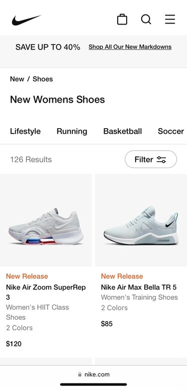
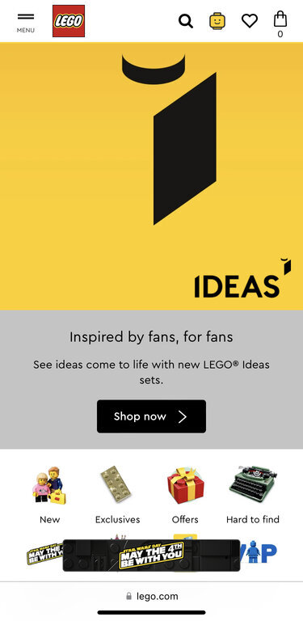
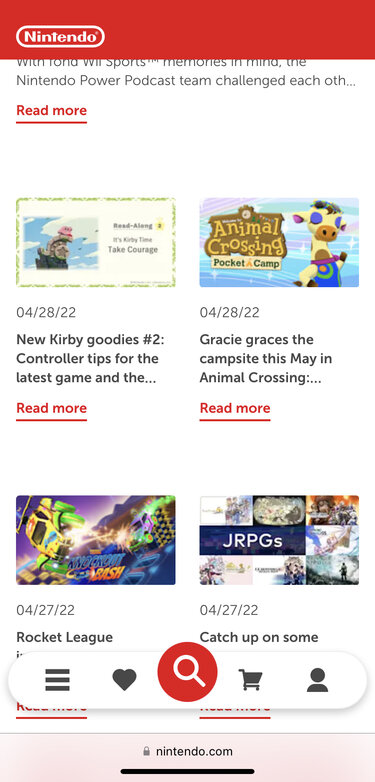

White Space and Clean Design
Nike
nike.com The Nike website shows the white space and clean principle. There is lots of negative space around words and images. The black and white color give the website a clean neat look.
PARC: Repetition
Lego
lego.com The Lego website shows the repetition principle. The website uses the colors yellow, white, and black multiple times. The icons look like they're the same size.
PARC: Contrast
Nintendo
nintendo.com The Nintendo website shows the PARC: Conrast principle. The bright red color really pops on the white background. The navigation bar has mostly neutral colors but the bright red pulls the viewers eye to the navigation bar because of the contrast.